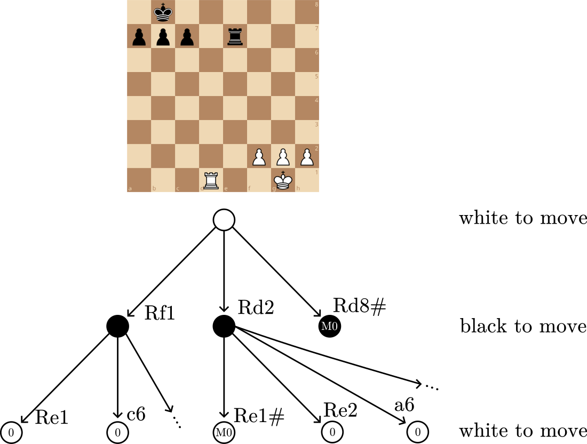
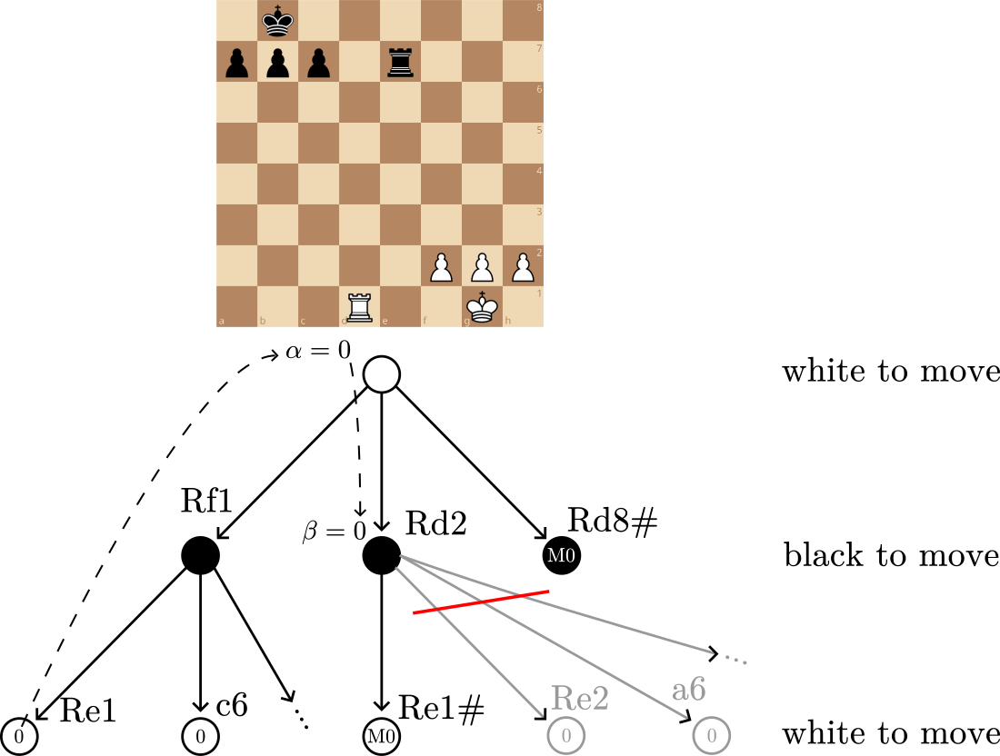
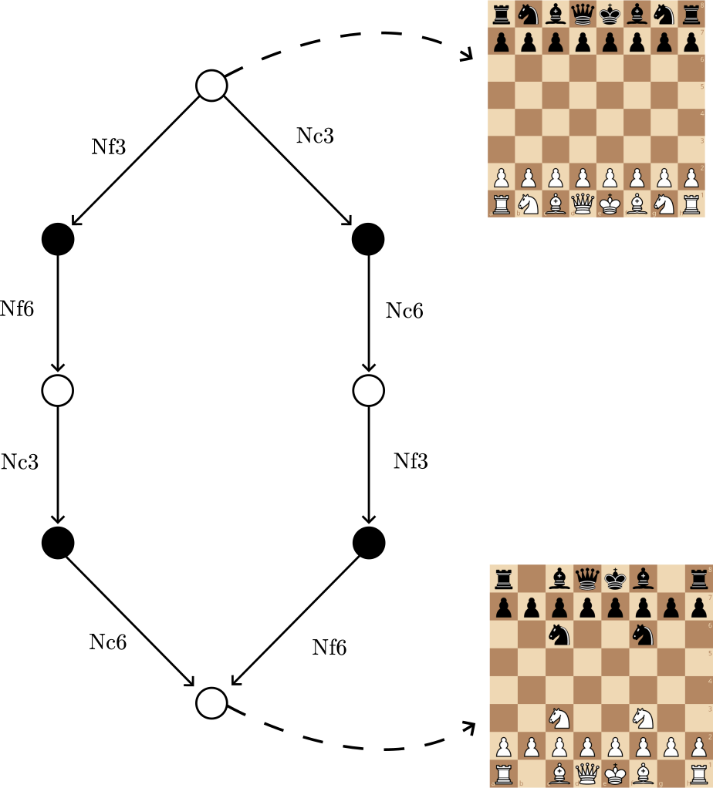
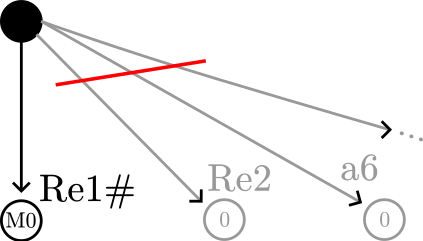

Chess engine, pt. 4: α-β pruning and better search
2025-04-18
This post is part of a series about building a chess-playing engine.
In the part 2 of this series, I discussed how the negamax algorithm can be used to construct a chess-playing program. We saw that as negamax thinks more and more moves ahead, it increases exponentially in runtime. Because of that, we used a heuristic approach that limits how deep the algorithm calculates. The advantage of this approach is that negamax can run in a reasonable timeframe, but the disadvantage is that it now no longer plays perfect chess.
In the current state of the engine, it can think around 4 half-moves ahead; anything deeper and the runtime grows exponentially to the point where it freezes. However, many human chess players can calculate much further into the future than that, so they can easily defeat the chess engine. Meanwhile, modern, good chess engines can calculate lines dozens of moves deep. Many of them actually use the exact same negamax algorithm shown earlier; the difference between our bad engine and a good engine is how the negamax is optimized.
Search is the process of traversing the gametree, and negamax is one way to do it. Optimizing this part of the engine is how we can go from thinking 4 half-moves ahead, to thinking 30 half-moves ahead. Search is one main component of chess engines; evaluation is the other, and I’ll discuss that in a future post.
In this post, I’ll explore some of the main optimizations that can make our engine’s search more efficient, and therefore make it play better chess. Specifically, I’ll be examining alpha-beta pruning, transposition tables, move ordering, and iterative deepening. These are the optimizations that I think are the easiest to implement, but that give the biggest gains in performance.
Note: If you’re following along by writing your own chess engine, remember to SPRT your changes, as I discuss in the last post. This will ensure that your optimizations actually improve the engine.
Alpha-beta pruning
The main issue with our current negamax search is that it examines every possible move in every position, which takes a long time. What if we could reduce the number of nodes that it examines? This is known as pruning the game tree; we are cutting branches, i.e. not examining some moves in some positions.
Alpha-beta pruning is one strategy for pruning. Its core idea is that once you realize a move is a mistake, you stop analyzing this line, and you think about other moves instead.
An example situation
Here’s a concrete example position, White to move:
(If you can’t see the interactive Lichess study widget, a picture of the position is provided below.)
Suppose our chess engine generates moves in this order:
- Rf1
- Rd2
- Rd8#
I know that a human player would immediately see the checkmate, but bear with me, because the computer has a different thought process.
We can draw a game tree as follows:

This game tree is limited to two half-moves. I’ve marked the evaluations for each end position, which are either material evaluations (0 because equal material) or checkmate evaluations (M0).
Here is how the engine evaluates the three moves:
The first move evaluated, Rf1, leads to a drawish position where both sides are equal in material. Therefore, this move has an evaluation of 0. So far, this is the best move.
Then, the engine will look at Rd2. This is a severe mistake, as it lets Black checkmate in one (Re1#). Without alpha-beta pruning, the engine, once it sees the checkmate, will keep examining Black’s other responses that don’t checkmate, like Re2 and a6. In other words, the engine thinks, “well, what if Black doesn’t do mate in one?” This is a waste of time; a human in the same situation, knowing that Rd2 is a mistake, would simply reject this candidate move, and think about other possibilities.
Finally, the engine sees that it can checkmate with Rd8#; this is the best move, and the final move it picks.
So, in this example, what we’d want to prune are the moves Re2, a6, and so on that we know aren’t worth considering. In a non-contrived example where the depth is higher, these moves would all have their own subtrees, which the engine would fully examine. Thus, pruning these moves creates big time savings; alpha-beta is the mechanism used to perform this pruning. (From my own experience, alpha-beta pruning noticeably improves the performance of the engine, shortening the search time from a few seconds to less than a second.)
Alpha and beta
To implement alpha-beta pruning, we introduce two arguments to negamax’s function signature:
negamax(position, depth: int, alpha: int, beta: int)
This function takes a node in the game tree, and returns the score of the node, along with the best move. Alpha and beta represent scores, in centipawns.
Alpha represents the best score obtained by the current player (us) in the current search. Meanwhile, beta is the best score obtained by the other player (them) in the current search. The current player is the one whose turn it is in the current node.
Every time negamax computes a score for a node, alpha is updated to the score (if it is better). Then, when negamax recurses, alpha and beta are switched and negated, because it’s now the other player’s turn.
Pruning happens when the current player finds a move from this node that’s “too good”, therefore the opponent will avoid letting this situation happen in the first place. Because of that, after finding that good move, we no longer examine other moves from this position.
Specifically, a move that is “too good” is a move that gives a score better than beta. This means that in some ancestor node above in the tree, the opponent found a candidate move that had a score of beta. Then, they examined another candidate move (which is a mistake) that leads to the current node. We got a score that’s better than beta (i.e. worse for the opponent). Since the current node is only reached by a bad move, we do not need to analyze it any further.
Note: When alpha-beta causes pruning, this is known as the node failing high. This means that the position will never happen, because it has a too high score for us. Since the score is better than beta, the pruning is also known as a beta cutoff.
Let’s now quickly examine how negamax with alpha-beta pruning works on the example position (see annotated game tree below).
Rf1 gives a score of 0 for White: no matter what both players do after Rf1, nobody has a material advantage. Then, alpha (White’s best score) is set to this score, α = 0.
Next, negamax tries Rd2, and now it is Black’s turn. Alpha now becomes beta, β = 0.
Black now responds with Re1#, giving a mate score (positive infinity for Black). This score is above beta (+∞ ≥ 0), which means we have a cutoff. Therefore, the rest of the moves, Re2, a6, and so on, are pruned and not considered at all.
In other words, from White’s perspective, Rf1 results in a score of 0, and Rd2 results in a score of -∞.1 The move Rd2 is clearly a mistake for White, so they will never play that move. Therefore, we don’t need to consider Re2, a6 and all the other replies Black can play to Rd2.
Below, I’ve annotated the game tree diagram. The pruned moves have been grayed out and crossed with a red line. Dotted arrows also show where the 0 value comes from for alpha then beta.

I intentionally did not go through every step of negamax here, like some other sites do; I only wrote down the important values that caused the pruning. Personally, I think stepping through the algorithm for each node is useful, but it clutters a post like this. Do remember that each node has its own alpha and beta, which is transmitted down the tree.
Now, an implementation of alpha-beta in pseudo-code:
def negamax(position, depth: int, alpha: int, beta: int) -> (Move, int):
"""
Return the best move and evaluation of a chess position.
Will only think `depth` half-moves ahead.
"""
if depth == 0:
return eval(position)
possible_moves = generate_moves(position)
if possible_moves.empty():
# checkmate or stalemate
return eval(position), None
best_score = -infinity
best_move = None
for each move in possible_moves:
updated_position = apply_move_to_position(position, move)
opponent_move, opponent_score = negamax(updated_position, depth - 1, -beta, -alpha)
our_score = negate_score(opponent_score)
if our_score > best_score:
best_score = our_score
best_move = move
if our_score >= beta:
# Beta cut-off
break
alpha = max(alpha, our_score)
return best_move, best_score
Initially, alpha and beta should be set to negative infinity and positive infinity (the worst scores for us and them respectively, from our perspective.).
Transposition table
Transpositions
A transposition in chess is when you get to the same position in a different way. For example, look at this game tree from the starting position (Lichess study):

Both branches have different moves, but in the end, both reach the same outcome. Currently, each time our engine gets to a node that is a transposition, it does the entire negamax computation again. This is wasteful, so we want to avoid re-computing the same values.
Hashing
Generally, the solution to avoid costly recomputation is caching, or memoization. Essentially, once we compute the score for a position, we store it in a hash table. (In our case, the hash table is usually a big array.) Every time we encounter the same position in our search, we can reuse this cached score.
Importantly though, how do we hash a chess position? We want to be able to take a chess position and turn it into an integer array index, so that every time we encounter the same position, we can reuse the score in the array.
The common method to hash chess positions is Zobrist hashing. I’m not good enough at math to explain why this is a good hashing method with low collision probability, but I can explain how it works.
First, randomly generate a bunch of 64-bit integers, known as keys. Generate:
- one key for every combination of square (64 squares), piece type (6 types) and colors (2 colors), for a total of 768 keys;
2**4, so 16 keys for every combination of castling rights. There are two colors, and each can have either kingside castling, queenside castling, both, or neither;- 8 keys for the current en-passant file;
- one key for every color, to mark the current turn.
Essentially, these keys all represent individual attributes of a chess position. These are most of the fields in a FEN, except for the move counters. Using these attributes (what pieces are on which squares, what castling rights does everyone have, if and where we can en-passant, whose turn it is), we can uniquely identify a chess position.
Then, to hash a chess position, take all the keys that represent it, then bitwise XOR the keys. This will produce a numeric, 64-bit integer hash.
If two positions have a matching Zobrist hash, then chances are they’re the same position.
Incremental hashing
The main advantage of Zobrist hashing is that it can be incrementally updated.
Let’s say we move a White pawn from e2 to e4.
Then, to get the Zobrist hash for the new position,
we take the old hash, XOR the (pawn, e2, White) key,
and XOR the (pawn, e4, White) key.
This works because if you XOR twice by the same thing,
it cancels out and undoes the first operation.
Then, do the same XOR operations for the current turn / color keys.
So, computing the new hash is only four operations, which is good for performance. Every single negamax call will have to compute a hash, which is why we want to optimize this step as much as possible.
Indexing
Our hash table / cache can be implemented as a big array. In C-style pseudo-code, it looks like this:
TTableEntry hashTable[N];
where N is the number of entries in our cache.
Ideally, we would have 2**64 entries,
that is, for every possible Zobrist hash,
we store an entry.
However, if we had 2**64 entries, each a byte,
that would be in total 18.4 exabytes in memory usage,
which is infeasible.
Typically, hash tables are around the scale of 100 megabytes,
so N = 10**8 entries.
Therefore, we need to find a way to convert a hash
into an index that is smaller than 10**8, or some reasonable number like that.
To do this, we take the hash modulo N.
For example, if the hash was 223, but the array only has N = 100 entries,
then I would use the index 223 % 100, i.e. the index 23.
Better engines that strongly optimize performance don’t explicitly use the modulo,
because this operation is relatively slow.
Instead, they set their hash table’s size to some power of two.
Then, truncating the high bits off the hash is equivalent to the modulo operation.
For example, say N = 8, and the hash is 0b110110.
Then, the top two bits would be truncated to give an index 0b0110.
This is equivalent to 0b110110 % 8.
Note: Even better engines, like Stockfish, use arcane math magic to use fast CPU instructions, while also allowing any N, not just powers of two. See Daniel Lemire’s post about this technique.
Using the transposition table
Once we have the indexing scheme, we can use it to cache our negamax results.
Earlier, I used the type TTableEntry for the individual array elements of the transposition table.
This could be a struct, and the important fields stored in the transposition table are usually:
- the Zobrist hash of the position;
- the
depthparameter of negamax; - the score returned;
- the best move returned.
Then, at the start of the negamax function, we attempt to use a cached result. If there is a matching table entry, we check the depth of the result. If the cached result’s depth is greater or equal to the depth we want (i.e. the cached result is accurate enough), we may use the cached result directly.
entry = hashTable[indexFrom(position.hash)]
if entry is not None and entry.hash == position.hash:
if entry.depth >= depth:
return entry.score, entry.best_move
Notice how we compare the transposition table entry’s hash to the position’s hash. Since we use modulo to get the index in the transposition table, two hashes will often map to the same index. Therefore, we need to compare the full 64-bit hash to be certain the cache entry matches our current position.
At the end of the negamax function, we save the result to the transposition table:
hashTable[indexFrom(position.hash)] = (position.hash, depth, best_score, best_move)
Here, we’re overwriting the hash entry at that index. Possibly, there might already be an entry with this index, which we would erase by doing this. This is known as an always replace replacement strategy. There are other replacement strategies, but empirically, always replace is a simple and decent one.
Note: When testing the transposition table, it may be useful to implement the info hashfull statistic
in UCI. This represents, in permille (0 permille is 0%, and 1000 permille is 100%), how many entries in the hash table are used.
When hashfull is high, that means entries are often being replaced.
Ideally, this number would be low, so that you aren’t throwing away entries.
Move ordering
Move ordering is the order in which moves are evaluated by the engine in each position. Optimizing move ordering is an easy, yet very effective approach for improving the performance of alpha-beta pruning. We saw earlier how alpha beta pruning can easily cut out dozens of moves from the game tree, like with Re1# in this diagram:

However, this relies on Re1# being the first move examined. If Re1# was the last move, then the beta cutoff would only be triggered at the end, and that would save no computation at all.
Because of how alpha-beta pruning works, finding a good move first can either immediately cause a beta cutoff, or, otherwise, raise alpha so that later there is a beta cutoff. Therefore, we want to examine good, or at least promising moves first, and then examine bad moves. This way, we maximize the chances of pruning the game tree and saving time.
The problem with getting good move ordering is that computers have zero intuition about chess. A hypothetical chess engine could evaluate a3 first from the starting position, simply because of alphabetical order, even though it’s not a great move.
Generally, the strategy to teach the computer about move ordering is to assign a score to each move based on some heuristics, then sort the list of possible moves based on that.
MVV-LVA
A good heuristic to order moves is MVV-LVA, most valuable victim, least valuable attacker. Essentially, this heuristic assigns a score to each capture move, which is:
(material value of captured piece) - (value of capturer piece)
For example, capturing a queen with a pawn has a score of 9 - 1 = 8, so pretty good.
But capturing a pawn with a queen is 1 - 9 = -8, so not a good idea.
Thus, MVV-LVA provides some decent intuition to the chess engine about what makes a good capture.
Recapture heuristic
In chess, trading pieces is an important part of the game. For instance, in this position, White can trade its pieces on the d5 square to gain 700 centipawns of material:
When exchanging pieces, most of the time the best move is very obvious: it’s to recapture the piece on the square you are trading on. The computer does not understand this, and it might generate completely irrelevant moves that lose material, like Nd7?? in the above study.
Therefore, the recapture heuristic says the engine should recapture with the least valuable attacker. This is practically always the best move in an exchange of pieces. Since we have MVV-LVA, we already have a bonus for the least valuable attacker, so we just keep track of the square where a capture last happened, then add a bonus to the move’s score if it’s a recapture on that square.
Iterative deepening
Iterative deepening is another strategy that helps with move ordering. The key idea is that the best move you get running negamax at depth N is probably the same move you’ll get running negamax at depth N + 1.
Because of that, we can run negamax at a lower depth, then use the results from that search to help with move ordering at a higher depth. Practically speaking, that means we run negamax at depth 1 to get a rough idea of what the best move is, then run it again at depth 2 to get a better idea, then depth 3, 4, 5, and so on. Each iteration improves on the accuracy of the best move returned.
In pseudo-code:
i = 1
while True:
negamax(depth = i)
i += 1
if good enough:
break
Iterative deepening might seem like a waste of time because it re-runs negamax over and over again, but in combination with the transposition table and alpha-beta pruning, it is actually a big improvement.
We can use the transposition table as a move ordering heuristic: always consider the transposition table’s best move (the “hash move”) first in negamax, even when the entry’s depth is lower than the search’s depth. When using iterative deepening, we’ll re-run negamax on the same nodes multiple times, and it will be able to use the hash move from prior iterations to guide the move ordering.
Better move ordering creates more beta cutoffs, and this completely offsets the time spent repeating negamax at lower depths.
Time management
Iterative deepening is good for move ordering, but as a side note, it is also necessary for clock management. When playing bullet (~1 minute) chess, the chess engine doesn’t have as much time to think as in classical (~1 hour) chess. Therefore, depending on how much time the engine has left, it must manage how deep it thinks.
Typically, engines will use iterative deepening to first perform low depth searches, and if it has more time, start higher depth searches.
The way this is usually implemented is with two deadlines: one soft, one hard. If iterative deepening finishes a negamax search and the time is past the soft deadline, it breaks out of the loop. Meanwhile, if the hard deadline is passed, negamax immediately aborts, even in the middle of the search.2
Conclusion
In this post, I covered some of my favourite optimizations for chess engine search. Unfortunately, because I didn’t implement all these features in this order in my own chess engine, I can’t show an example game between the improved and original version. Trust me though, they do make the engine play much better chess.
Again, these are just some of the most simple to implement techniques; if you wish to read more, there are a bunch of links in this post, and you can also consult Search on the Chess Programming Wiki for more inspiration. Note that the wiki documents a wide variety of search strategies and optimizations, many of which are rare and not necessarily worth implementing.
At this point in the series, there are still some major issues with our chess engine. Some of the most annoying ones are that it constantly does repetition draws, makes obvious blunders, and, worst of all, according to my friend, it “plays weird”. In the coming posts, I’ll discuss strategies to fix all of these issues.
(Thanks to Lichess for the interactive studies and chessboard diagrams.)
-
When there is a beta cutoff, the score that causes the cutoff (+∞ for Black in the example) is a lower bound on the true score. We never actually examine the pruned moves, which may have a higher score. From the opponent’s perspective, the score (-∞ for White in the example) is an upper bound. ↩
-
The hard deadline can be implemented with a check in negamax that runs occasionally, e.g. every 65536 nodes searched, to avoid a performance hit. If the hard deadline is passed, the search is aborted. ↩